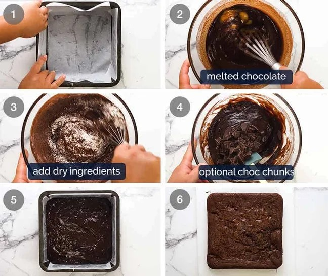

Tämä mehevä suklaakakku on helppo valmistaa ja takaa täyteläisen suklaanautinnon. Seuraa reseptiä ja nauti!
Tämä fondant-suklaakakku on helppo valmistaa ja tarjoaa täydellisen suklaanautinnon. Noudata ohjetta ja nauti! 😋
Ainekset
- 200g tummaa suklaata
- 150g voita
- 2 dl sokeria
- 3 kananmunaa
- 2 dl vehnäjauhoja
- 1 tl leivinjauhetta
- 1 tl vaniljasokeria
Valmistusohjeet
Sulata suklaa ja voi miedolla lämmöllä. Anna jäähtyä hieman.
Vatkaa munat ja sokeri vaahdoksi.
Lisää sulatettu suklaaseos munavaahtoon.
Sekoita kuivat aineet keskenään ja lisää taikinaan.
Kaada taikina leivinpaperilla vuorattuun vuokaan ja paista 175°C noin 20–25 minuuttia.
Paista uunissa 20–25 minuuttia riippuen haluamastasi koostumuksesta.
Anna jäähtyä, leikkaa paloiksi ja nauti!.
Galleria
